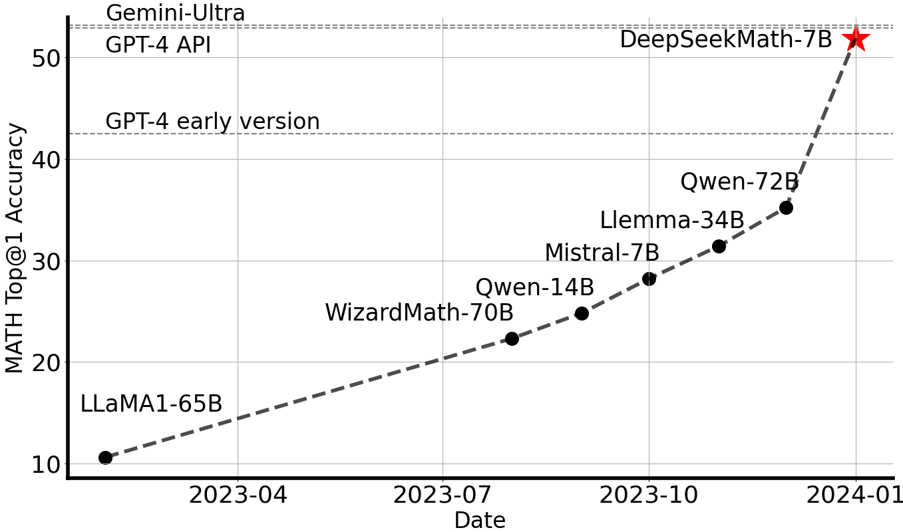
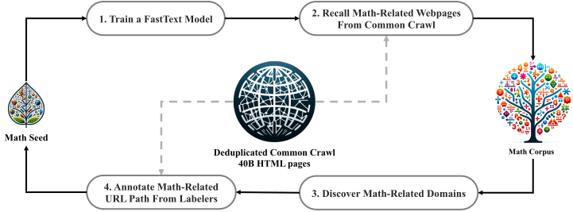
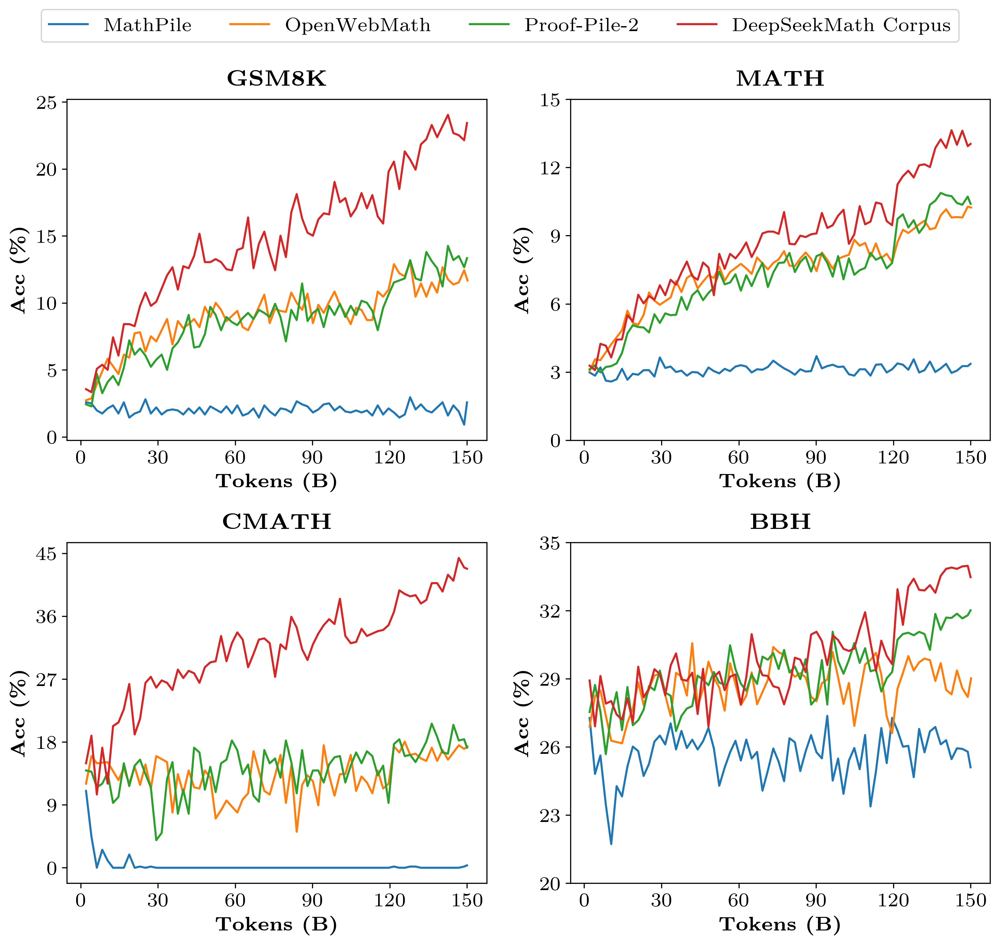
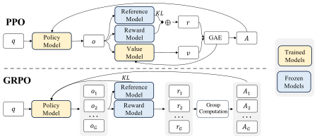
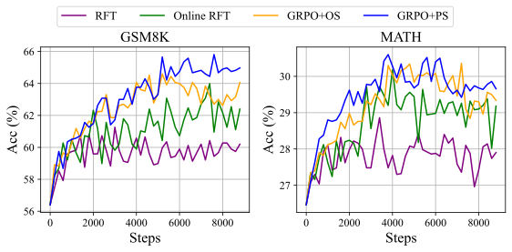
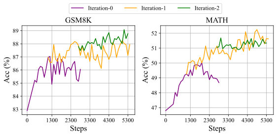
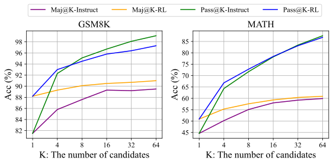

DeepSeekMath：在开源语言模型中推进数学推理的极限
摘要
数学推理由于其复杂且结构化的特性，对语言模型构成了重大挑战。在本文中，我们介绍 DeepSeekMath 7B，它基于 DeepSeek-Coder-Base-v1.5 7B 继续预训练，使用了从 Common Crawl 中提取的 120B 数学相关词元，以及自然语言和代码数据。DeepSeekMath 7B 在竞赛级 MATH 基准上取得了 51.7% 的优异成绩，且未依赖外部工具包和投票技术，接近 Gemini-Ultra 和 GPT-4 的性能水平。对 DeepSeekMath 7B 的 64 个样本进行自一致性（self-consistency）后，在 MATH 上达到 60.9%。DeepSeekMath 的数学推理能力归功于两个关键因素：第一，我们通过精心设计的数据选择流程，挖掘了公开可用的网络数据中的巨大潜力。第二，我们引入了组相对策略优化（Group Relative Policy Optimization, GRPO），这是近端策略优化（Proximal Policy Optimization, PPO）的一种变体，在增强数学推理能力的同时优化了 PPO 的内存使用。
† 本工作于 DeepSeek-AI 实习期间完成。

1 引言
大语言模型（LLM）彻底改变了人工智能中数学推理的方法，在定量推理基准 (Hendrycks et al., 2021) 和几何推理基准 (Trinh et al., 2024) 上都推动了显著进展。此外，这些模型已被证明在帮助人类解决复杂数学问题方面发挥了重要作用 (Tao, 2023)。然而，GPT-4 (OpenAI, 2023) 和 Gemini-Ultra (Anil et al., 2023) 等前沿模型并未公开可用，而目前可访问的开源模型在性能上明显落后。
在本研究中，我们介绍 DeepSeekMath，这是一个领域特定的语言模型，其数学能力显著优于开源模型，并在学术基准上接近 GPT-4 的性能水平。 为实现这一目标，我们构建了 DeepSeekMath Corpus，这是一个大规模高质量预训练语料库，包含 120B 数学词元。 该数据集使用基于 fastText 的分类器 (Joulin et al., 2016) 从 Common Crawl（CC）中提取。在初始迭代中，分类器以 OpenWebMath (Paster et al., 2023) 中的实例作为正例进行训练，同时纳入多样化的其他网页作为负例。随后，我们使用该分类器从 CC 中挖掘更多正例，并通过人工标注进一步精炼。然后，用这一增强后的数据集更新分类器以提升其性能。评估结果表明，该大规模语料库质量很高，因为我们的基础模型 DeepSeekMath-Base 7B 达到 64.2%（GSM8K (Cobbe et al., 2021)）和 36.2%（竞赛级 MATH 数据集 (Hendrycks et al., 2021)），优于 Minerva 540B (Lewkowycz et al., 2022a)。此外，DeepSeekMath Corpus 是多语言的，因此我们观察到中文数学基准 (Wei et al., 2023; Zhong et al., 2023) 上的提升。 我们相信，我们在数学数据处理方面的经验是研究界的一个起点，未来仍有很大的改进空间。
DeepSeekMath-Base 以 DeepSeek-Coder-Base-v1.5 7B (Guo et al., 2024) 初始化，因为我们注意到从代码训练模型出发相比通用 LLM 是更好的选择。此外，我们观察到数学训练还提升了模型在 MMLU (Hendrycks et al., 2020) 和 BBH 基准 (Suzgun et al., 2022) 上的能力，这表明它不仅增强了模型的数学能力，还放大了通用推理能力。
在预训练之后，我们使用思维链 (Wei et al., 2022)、程序思维 (Chen et al., 2022; Gao et al., 2023) 和工具集成推理 (Gou et al., 2023) 数据对 DeepSeekMath-Base 进行数学指令微调。 所得模型 DeepSeekMath-Instruct 7B 击败了所有 7B 规模的同类模型，并与 70B 开源指令微调模型相当。
此外，我们引入了组相对策略优化（Group Relative Policy Optimization, GRPO），这是近端策略优化（PPO）(Schulman et al., 2017) 的一种变体强化学习（RL）算法。 GRPO 舍弃了评论家模型，转而从组得分中估计基线，显著减少了训练资源。 仅使用一部分英语指令微调数据，GRPO 在强化学习阶段相较于强大的 DeepSeekMath-Instruct 取得了大幅提升，包括域内任务（GSM8K：82.9% 88.2%，MATH：46.8% 51.7%）和域外数学任务（例如 CMATH：84.6% 88.8%）。 我们还提供了一个统一范式来理解不同方法，例如拒绝采样微调（Rejection Sampling Fine-Tuning, RFT）(Yuan et al., 2023a)、直接偏好优化（Direct Preference Optimization, DPO）(Rafailov et al., 2023)、PPO 和 GRPO。 基于这一统一范式，我们发现所有这些方法在概念上都可以被视为直接或简化的强化学习技术。 我们还进行了大量实验，例如在线与离线训练、结果与过程监督、单轮与迭代强化学习等，以深入探究这一范式的关键要素。 最后，我们解释了我们的强化学习为何能提升指令微调模型的性能，并基于这一统一范式进一步总结了实现更有效强化学习的潜在方向。
1.1 贡献
我们的贡献包括可扩展的数学预训练，以及对强化学习的探索和分析。
大规模数学预训练
- •
-
•
我们预训练的基础模型 DeepSeekMath-Base 7B 达到了与 Minerva 540B (Lewkowycz et al., 2022a) 相当的性能，这表明参数数量并不是数学推理能力的唯一关键因素。 一个在高质量数据上预训练的较小模型也可以取得强大性能。
-
•
我们分享了数学训练实验中的发现。 在数学训练之前进行代码训练，可以提升模型在有工具和无工具使用情况下解决数学问题的能力。 这为长期存在的问题提供了一个部分答案：代码训练能提升推理能力吗？ 我们相信它能，至少对数学推理而言如此。
-
•
尽管在 arXiv 论文上训练很常见，尤其是在许多与数学相关的论文中，但它在本文采用的所有数学基准上并未带来显著提升。
强化学习的探索与分析
-
•
我们引入了组相对策略优化（Group Relative Policy Optimization, GRPO），这是一种高效且有效的强化学习算法。GRPO 舍弃了评论家模型，转而从组得分中估计基线，与近端策略优化（PPO）相比显著减少了训练资源。
-
•
我们证明，仅使用指令微调数据，GRPO 就显著提升了我们的指令微调模型 DeepSeekMath-Instruct 的性能。 此外，我们观察到在强化学习过程中域外性能也有所提升。
-
•
我们提供了一个统一范式来理解不同方法，例如 RFT、DPO、PPO 和 GRPO。我们还进行了大量实验，例如在线与离线训练、结果与过程监督、单轮与迭代强化学习等，以深入探究这一范式的关键要素。
-
•
基于我们的统一范式，我们探索了强化学习有效的原因，并总结了大语言模型实现更有效强化学习的若干潜在方向。
1.2 评估与指标汇总
-
•
中英文数学推理： 我们在英文和中文基准上对模型进行了全面评估，涵盖从小学到大学水平的数学问题。 英文基准包括 GSM8K (Cobbe et al., 2021)、MATH (Hendrycks et al., 2021)、SAT (Azerbayev et al., 2023)、OCW Courses (Lewkowycz et al., 2022a)、MMLU-STEM (Hendrycks et al., 2020)。 中文基准包括 MGSM-zh (Shi et al., 2023)、CMATH (Wei et al., 2023)、Gaokao-MathCloze (Zhong et al., 2023) 和 Gaokao-MathQA (Zhong et al., 2023)。 我们评估模型在不使用工具的情况下生成完整文本解答的能力，以及使用 Python 解决问题的能力。
在英文基准上，DeepSeekMath-Base 与闭源 Minerva 540B (Lewkowycz et al., 2022a) 具有竞争力，并超越了所有开源基础模型（例如 Mistral 7B (Jiang et al., 2023) 和 Llemma-34B (Azerbayev et al., 2023)），无论它们是否经过数学预训练，且往往优势显著。 值得注意的是，DeepSeekMath-Base 在中文基准上表现更优，这可能是因为我们没有遵循先前工作 (Lewkowycz et al., 2022a; Azerbayev et al., 2023) 仅收集英文数学预训练数据，而是也纳入了高质量的非英语数据。 通过数学指令微调和强化学习，所得的 DeepSeekMath-Instruct 和 DeepSeekMath-RL 展现出强大性能，在开源社区中首次于竞赛级 MATH 数据集上取得超过 50% 的准确率。
- •
-
•
自然语言理解、推理与代码： 为了全面刻画模型在通用理解、推理和编码方面的能力，我们在以下基准上评估 DeepSeekMath-Base：大规模多任务语言理解（MMLU）基准 (Hendrycks et al., 2020)，其涵盖 57 个涵盖多样主题的多项选择任务；BIG-Bench Hard（BBH）(Suzgun et al., 2022)，其由 23 个具有挑战性的任务组成、大多需要多步推理才能解决；以及广泛用于评估代码语言模型的 HumanEval (Chen et al., 2021) 和 MBPP (Austin et al., 2021)。 数学预训练同时有益于语言理解和推理性能。
2 数学预训练
2.1 数据收集与去污染
在本节中，我们将概述从 Common Crawl 构建 DeepSeekMath Corpus 的过程。 如图 2 所示，我们展示了一个迭代流程，演示如何从 Common Crawl 系统地收集大规模数学语料库，从种子语料库（例如一个规模小但高质量的数学相关数据集集合）开始。 值得注意的是，这种方法也适用于其他领域，例如编码。

首先，我们选择 OpenWebMath (Paster et al., 2023)——一个高质量数学网页文本集合——作为初始种子语料库。 使用该语料库，我们训练一个 fastText 模型 (Joulin et al., 2016) 来召回更多类似 OpenWebMath 的数学网页。 具体而言，我们从种子语料库中随机选择 500,000 个数据点作为正训练样本，另从 Common Crawl 中选择 500,000 个网页作为负样本。 我们采用一个开源库11 1 https://fasttext.cc 进行训练，配置向量维度为 256、学习率为 0.1、词 n-gram 最大长度为 3、词最小出现次数为 3、训练轮数为 3。 为减小原始 Common Crawl 的规模，我们采用基于 URL 的精确去重和近似去重技术，得到 40B 个 HTML 网页。 然后，我们使用 fastText 模型从去重后的 Common Crawl 中召回数学网页。 为过滤掉低质量数学内容，我们根据 fastText 模型预测的得分为收集的页面排序，仅保留排名靠前的页面。 保留数据的规模通过在前 40B、80B、120B 和 160B 词元上的预训练实验进行评估。 在第一次迭代中，我们选择保留前 40B 词元。
在第一轮数据收集之后，仍有大量数学网页未被收集，这主要是因为 fastText 模型是在一组缺乏足够多样性的正样本上训练的。 因此，我们寻找更多数学网页来源来丰富种子语料，从而优化 fastText 模型。 具体而言，我们首先将整个 Common Crawl 组织为互不相交的域名； 域名定义为共享同一基础 URL 的网页集合。 对于每个域名，我们计算在第一轮迭代中被收集的网页所占的百分比。 若某域名中超过 10% 的网页已被收集，则将该域名归类为与数学相关（例如 mathoverflow.net）。 随后，我们人工标注这些已识别域名中与数学内容相关的 URL（例如 mathoverflow.net/questions）。 与这些 URL 相链接但尚未被收集的网页将被加入种子语料。 这一方法使我们能够收集更多正样本，从而训练出改进的 fastText 模型，使其在后续迭代中能召回更多数学数据。 经过四轮数据收集，我们最终得到 35.5M 个数学网页，总计 120B 词元。 在第四轮迭代中，我们注意到近 98% 的数据已在第三轮迭代中被收集，因此决定停止数据收集。
2.2 验证 DeepSeekMath 语料的质量
我们开展预训练实验，以考察 DeepSeekMath 语料与近期发布的数学训练语料相比的表现：
2.2.1 训练设置
我们在一个具有 1.3B 参数的通用预训练语言模型上应用数学训练，该模型与 DeepSeek LLM (DeepSeek-AI, 2024) 共享同一框架，记为 DeepSeek-LLM 1.3B。 我们在每个数学语料上分别训练模型 150B 词元。所有实验均使用高效轻量的 HAI-LLM (High-flyer, 2023) 训练框架进行。 遵循 DeepSeek LLM 的训练实践，我们使用 AdamW 优化器 (Loshchilov and Hutter, 2017)，参数为 、 和 ，并采用多步学习率调度：学习率在 2,000 个预热步后达到峰值，随后降至峰值的 31.6%（训练过程进行到 80% 时），再进一步降至峰值的 10.0%（训练过程进行到 90% 时）。 我们将学习率的最大值设为 5.3e-4，并使用 4M 词元的批大小和 4K 的上下文长度。
| Math Corpus | Size | English Benchmarks | Chinese Benchmarks | ||||||||||
| GSM8K | MATH | OCW | SAT |
|
CMATH |
|
| ||||||
| No Math Training | N/A | 2.9% | 3.0% | 2.9% | 15.6% | 19.5% | 12.3% | 0.8% | 17.9% | ||||
| MathPile | 8.9B | 2.7% | 3.3% | 2.2% | 12.5% | 15.7% | 1.2% | 0.0% | 2.8% | ||||
| OpenWebMath | 13.6B | 11.5% | 8.9% | 3.7% | 31.3% | 29.6% | 16.8% | 0.0% | 14.2% | ||||
| Proof-Pile-2 | 51.9B | 14.3% | 11.2% | 3.7% | 43.8% | 29.2% | 19.9% | 5.1% | 11.7% | ||||
| DeepSeekMath Corpus | 120.2B | 23.8% | 13.6% | 4.8% | 56.3% | 33.1% | 41.5% | 5.9% | 23.6% | ||||

2.2.2 评估结果
DeepSeekMath 语料质量高、涵盖多语言数学内容，且规模最大。
2.3 训练与评估 DeepSeekMath-Base 7B
在本节中，我们介绍 DeepSeekMath-Base 7B，这是一个具有强推理能力、尤其是在数学方面能力突出的基础模型。 我们的模型以 DeepSeek-Coder-Base-v1.5 7B (Guo et al., 2024) 初始化，并训练了 500B 词元。数据分布如下：56% 来自 DeepSeekMath 语料，4% 来自 AlgebraicStack，10% 来自 arXiv，20% 为 Github 代码，其余 10% 为来自 Common Crawl 的英文和中文自然语言数据。 我们主要采用第 2.2.1 节中规定的训练设置，不同之处在于我们将学习率的最大值设为 4.2e-4，并使用 10M 词元的批大小。
我们对 DeepSeekMath-Base 7B 的数学能力进行了全面评估，重点关注其在以下方面的能力：在不依赖外部工具的情况下生成自包含的数学解答、使用工具求解数学问题，以及进行形式化定理证明。 除数学之外，我们还提供了该基础模型更全面的概况，包括其在自然语言理解、推理和编程技能方面的表现。
通过逐步推理求解数学问题
我们使用少样本思维链提示 (Wei et al., 2022)，在八个英文和中文基准上评估 DeepSeekMath-Base 求解数学问题的表现。 这些基准涵盖定量推理（例如 GSM8K (Cobbe et al., 2021)、MATH (Hendrycks et al., 2021) 和 CMATH (Wei et al., 2023)）以及多项选择题（例如 MMLU-STEM (Hendrycks et al., 2020) 和 Gaokao-MathQA (Zhong et al., 2023)），覆盖从小学到大学难度的多个数学领域。
如表 2 所示，DeepSeekMath-Base 7B 在全部八个基准上的表现均领先于开源基础模型（包括广泛使用的通用模型 Mistral 7B (Jiang et al., 2023)，以及近期发布的 Llemma 34B (Azerbayev et al., 2023)，该模型在 Proof-Pile-2 (Azerbayev et al., 2023) 上进行过数学训练）。 值得注意的是，在竞赛级别的 MATH 数据集上，DeepSeekMath-Base 以超过 10% 个绝对百分点的优势超越现有开源基础模型，并且优于 Minerva 540B (Lewkowycz et al., 2022a)——后者是一个规模大 77 倍的闭源基础模型，基于 PaLM (Lewkowycz et al., 2022b) 构建并进一步在数学文本上训练。
| Model | Size | English Benchmarks | Chinese Benchmarks | ||||||||||
| GSM8K | MATH | OCW | SAT |
|
CMATH |
|
| ||||||
| Closed-Source Base Model | |||||||||||||
| Minerva | 7B | 16.2% | 14.1% | 7.7% | - | 35.6% | - | - | - | ||||
| Minerva | 62B | 52.4% | 27.6% | 12.0% | - | 53.9% | - | - | - | ||||
| Minerva | 540B | 58.8% | 33.6% | 17.6% | - | 63.9% | - | - | - | ||||
| Open-Source Base Model | |||||||||||||
| Mistral | 7B | 40.3% | 14.3% | 9.2% | 71.9% | 51.1% | 44.9% | 5.1% | 23.4% | ||||
| Llemma | 7B | 37.4% | 18.1% | 6.3% | 59.4% | 43.1% | 43.4% | 11.9% | 23.6% | ||||
| Llemma | 34B | 54.0% | 25.3% | 10.3% | 71.9% | 52.9% | 56.1% | 11.9% | 26.2% | ||||
| DeepSeekMath-Base | 7B | 64.2% | 36.2% | 15.4% | 84.4% | 56.5% | 71.7% | 20.3% | 35.3% | ||||
使用工具求解数学问题
我们使用少样本程序思维提示 (Chen et al., 2022; Gao et al., 2023)，在 GSM8K 和 MATH 上评估程序辅助的数学推理。 提示模型通过编写 Python 程序来求解每个问题，其中可使用 math 和 sympy 等库进行复杂计算。 程序的执行结果被作为答案进行评估。 如表 3 所示，DeepSeekMath-Base 7B 优于此前最先进的 Llemma 34B。
| Model | Size | Problem Solving w/ Tools | Informal-to-Formal Proving | ||
| GSM8K+Python | MATH+Python | miniF2F-valid | miniF2F-test | ||
| Mistral | 7B | 48.5% | 18.2% | 18.9% | 18.0% |
| CodeLlama | 7B | 27.1% | 17.2% | 16.3% | 17.6% |
| CodeLlama | 34B | 52.7% | 23.5% | 18.5% | 18.0% |
| Llemma | 7B | 41.0% | 18.6% | 20.6% | 22.1% |
| Llemma | 34B | 64.6% | 26.3% | 21.0% | 21.3% |
| DeepSeekMath-Base | 7B | 66.9% | 31.4% | 25.8% | 24.6% |
形式化数学
形式化证明自动化有助于确保数学证明的准确性和可靠性并提升效率，近年来受到越来越多的关注。 我们在 (Jiang et al., 2022) 的非形式化到形式化证明任务上评估 DeepSeekMath-Base 7B，该任务要求基于非形式化陈述、该陈述的形式化对应物以及非形式化证明来生成形式化证明。 我们在 miniF2F (Zheng et al., 2021)（一个面向形式化奥赛级别数学的基准）上进行评估，并通过少样本提示为每个问题生成 Isabelle 形式化证明。 遵循 Jiang et al. (2022)，我们利用模型生成证明草图，并执行现成的自动证明器 Sledgehammer (Paulson, 2010) 来填补缺失细节。 如表 3 所示，DeepSeekMath-Base 7B 在证明自动形式化方面展现出强劲的表现。
| Model | Size | MMLU | BBH | HumanEval (Pass@1) | MBPP (Pass@1) |
| Mistral | 7B | 62.4% | 55.7% | 28.0% | 41.4% |
| DeepSeek-Coder-Base-v1.5 | 7B | 42.9% | 42.9% | 40.2% | 52.6% |
| DeepSeek-Coder-Base-v1.5 | 7B | 49.1% | 55.2% | 43.2% | 60.4% |
| DeepSeekMath-Base | 7B | 54.9% | 59.5% | 40.9% | 52.6% |
自然语言理解、推理和代码
我们在 MMLU (Hendrycks et al., 2020) 上评估自然语言理解性能，在 BBH (Suzgun et al., 2022) 上评估推理性能，并在 HumanEval (Chen et al., 2021) 和 MBPP (Austin et al., 2021) 上评估编程能力。如表 4 所示，与其前身 DeepSeek-Coder-Base-v1.5 (Guo et al., 2024) 相比，DeepSeekMath-Base 7B 在 MMLU 和 BBH 上的性能显著提升，说明数学训练对语言理解和推理具有积极影响。 此外，通过纳入代码词元进行持续训练，DeepSeekMath-Base 7B 有效保持了 DeepSeek-Coder-Base-v1.5 在两个编程基准上的性能。 总体而言，DeepSeekMath-Base 7B 在三个推理和编程基准上显著优于通用模型 Mistral 7B (Jiang et al., 2023)。
3 监督微调
3.1 SFT 数据构建
3.2 训练与评估 DeepSeekMath-Instruct 7B
在本节中，我们介绍 DeepSeekMath-Instruct 7B，它在 DeepSeekMath-Base 的基础上进行了数学指令调优。 训练样本被随机拼接，直到达到 4K 词元的最大上下文长度。 我们训练模型 500 步，批大小为 256，恒定学习率为 5e-5。
我们在 4 个英文和中文定量推理基准上，分别评估模型在不使用工具和使用工具情况下的数学表现。 我们将我们的模型与当时领先的模型进行对比：
-
•
闭源模型包括： (1) GPT 系列，其中 GPT-4 (OpenAI, 2023) 和 GPT-4 Code Interpreter 22 2 https://openai.com/blog/chatgpt-plugins##code-interpreter 是最强的几个， (2) Gemini Ultra 和 Pro (Anil et al., 2023)， (3) Inflection-2 (Inflection AI, 2023)， (4) Grok-1 33 3 https://x.ai/model-card， 以及中国公司近期发布的模型，包括 (5) Baichuan-3 44 4 https://www.baichuan-ai.com， (6) 最新的 GLM-4 55 5 https://open.bigmodel.cn/dev/api#glm-4，来自 GLM 系列 (Du et al., 2022)。 这些模型面向通用目的，其中大多数已经经历了一系列对齐流程。
-
•
开源模型包括： 通用模型，如 (1) DeepSeek-LLM-Chat 67B (DeepSeek-AI, 2024)、(2) Qwen 72B (Bai et al., 2023)、(3) SeaLLM-v2 7B (Nguyen et al., 2023) 和 (4) ChatGLM3 6B (ChatGLM3 Team, 2023)， 以及在数学方面经过增强的模型，包括 (5) InternLM2-Math 20B 66 6 https://github.com/InternLM/InternLM-Math，它基于 InternLM2 构建，先经过数学训练，再进行指令微调， (6) Math-Shepherd-Mistral 7B，它应用 PPO 训练 (Schulman et al., 2017)，训练对象为 Mistral 7B (Jiang et al., 2023)，使用一个过程监督奖励模型， (7) WizardMath 系列 (Luo et al., 2023)，它使用 evolve-instruct（即一种使用 AI 进化指令的指令微调版本）以及训练问题主要来自 GSM8K 和 MATH 的 PPO 训练，提升了 Mistral 7B 和 Llama-2 70B (Touvron et al., 2023) 的数学推理能力， (8) MetaMath 70B (Yu et al., 2023)，它是在 GSM8K 和 MATH 的增强版本上微调的 Llama-2 70B， (9) ToRA 34B Gou et al. (2023)，它是为进行工具集成数学推理而微调的 CodeLlama 34B， (10) MAmmoTH 70B (Yue et al., 2023)，它是在 MathInstruct 上进行指令微调的 Llama-2 70B。
| Model | Size | English Benchmarks | Chinese Benchmarks | ||
| GSM8K | MATH | MGSM-zh | CMATH | ||
| Chain-of-Thought Reasoning | |||||
| Closed-Source Model | |||||
| Gemini Ultra | - | 94.4% | 53.2% | - | - |
| GPT-4 | - | 92.0% | 52.9% | - | 86.0% |
| Inflection-2 | - | 81.4% | 34.8% | - | - |
| GPT-3.5 | - | 80.8% | 34.1% | - | 73.8% |
| Gemini Pro | - | 86.5% | 32.6% | - | - |
| Grok-1 | - | 62.9% | 23.9% | - | - |
| Baichuan-3 | - | 88.2% | 49.2% | - | - |
| GLM-4 | - | 87.6% | 47.9% | - | - |
| Open-Source Model | |||||
| InternLM2-Math | 20B | 82.6% | 37.7% | - | - |
| Qwen | 72B | 78.9% | 35.2% | - | - |
| Math-Shepherd-Mistral | 7B | 84.1% | 33.0% | - | - |
| WizardMath-v1.1 | 7B | 83.2% | 33.0% | - | - |
| DeepSeek-LLM-Chat | 67B | 84.1% | 32.6% | 74.0% | 80.3% |
| MetaMath | 70B | 82.3% | 26.6% | 66.4% | 70.9% |
| SeaLLM-v2 | 7B | 78.2% | 27.5% | 64.8% | - |
| ChatGLM3 | 6B | 72.3% | 25.7% | - | - |
| WizardMath-v1.0 | 70B | 81.6% | 22.7% | 64.8% | 65.4% |
| DeepSeekMath-Instruct | 7B | 82.9% | 46.8% | 73.2% | 84.6% |
| DeepSeekMath-RL | 7B | 88.2% | 51.7% | 79.6% | 88.8% |
| Tool-Integrated Reasoning | |||||
| Closed-Source Model | |||||
| GPT-4 Code Interpreter | - | 97.0% | 69.7% | - | - |
| Open-Source Model | |||||
| InternLM2-Math | 20B | 80.7% | 54.3% | - | - |
| DeepSeek-LLM-Chat | 67B | 86.7% | 51.1% | 76.4% | 85.4% |
| ToRA | 34B | 80.7% | 50.8% | 41.2% | 53.4% |
| MAmmoTH | 70B | 76.9% | 41.8% | - | - |
| DeepSeekMath-Instruct | 7B | 83.7% | 57.4% | 72.0% | 84.3% |
| DeepSeekMath-RL | 7B | 86.7% | 58.8% | 78.4% | 87.6% |
如表 5 所示，在不允许使用工具的评估设定下，DeepSeekMath-Instruct 7B 展示了强大的逐步推理性能。 值得注意的是，在竞赛级 MATH 数据集上，我们的模型超越了所有开源模型和大多数专有模型（例如 Inflection-2 和 Gemini Pro），绝对优势至少为 9%。 即使对于规模大得多的模型（例如 Qwen 72B）或通过以数学为重点的强化学习专门增强过的模型（例如 WizardMath-v1.1 7B），情况也是如此。 虽然 DeepSeekMath-Instruct 在 MATH 上与中文专有模型 GLM-4 和 Baichuan-3 相当，但它仍不及 GPT-4 和 Gemini Ultra。
在允许模型整合自然语言推理与基于程序的工具使用来解决问题的评估设定下，DeepSeekMath-Instruct 7B 在 MATH 上的准确率接近 60%，超越了所有现有开源模型。 在其他基准上，我们的模型与 DeepSeek-LLM-Chat 67B 相比具有竞争力，后者是此前最先进的模型，规模大 10 倍。
4 强化学习
4.1 组相对策略优化
强化学习（RL）已被证明能在监督微调（SFT）阶段之后进一步提升 LLM 的数学推理能力 (Wang et al., 2023b; Luo et al., 2023)。 在本节中，我们介绍我们高效且有效的 RL 算法——组相对策略优化（GRPO）。
4.1.1 从 PPO 到 GRPO
近端策略优化（PPO）(Schulman et al., 2017) 是一种演员-评论家强化学习算法，广泛用于 LLM 的强化学习微调阶段 (Ouyang et al., 2022)。具体而言，它通过最大化以下替代目标来优化 LLM：
| (1) |
其中 和 分别是当前策略模型和旧策略模型， 分别是从问题数据集和旧策略 中采样得到的问题和输出。 是 PPO 中为稳定训练而引入的与裁剪相关的超参数。 是优势，它通过应用广义优势估计（GAE）(Schulman et al., 2015) 计算得到，计算依据为奖励 和学习到的价值函数 。因此，在 PPO 中，价值函数需要与策略模型一同训练；并且为了缓解对奖励模型的过度优化，标准做法是在每个词元的奖励中加入来自参考模型的逐词元 KL 惩罚 (Ouyang et al., 2022)，即：
| (2) |
其中 是奖励模型， 是参考模型（通常是初始 SFT 模型）， 是 KL 惩罚的系数。

由于 PPO 中采用的价值函数通常是另一个与策略模型规模相当的模型，因此会带来大量的内存和计算负担。此外，在 RL 训练期间，价值函数被用作基线来计算优势以降低方差。而在 LLM 语境下，通常只有最后一个词元会被奖励模型赋予奖励分数，这可能会使训练一个在每个词元上都准确的价值函数变得复杂。为解决这一问题，如图 4 所示，我们提出了组相对策略优化（GRPO），它无需像 PPO 那样进行额外的价值函数近似，而是使用针对同一问题产生的多个采样输出的平均奖励作为基线。更具体地说，对于每个问题 ，GRPO 采样一组输出 ，采样来源为旧策略 ，然后通过最大化以下目标来优化策略模型：
| (3) |
其中 和 是超参数， 是仅基于每组内部输出的相对奖励计算得到的优势，将在后续小节中详细说明。GRPO 用于计算优势的组相对方式，与奖励模型的比较性质高度契合，因为奖励模型通常是在同一问题的输出之间进行比较的数据集上训练的。另请注意，GRPO 不是在奖励中加入 KL 惩罚，而是通过直接将训练策略与参考策略之间的 KL 散度加到损失中进行正则化，从而避免使 的计算复杂化。并且与 (2) 中使用的 KL 惩罚项不同，我们使用以下无偏估计量 (Schulman, 2020) 来估计 KL 散度：
| (4) |
该估计量保证为正。
输入 初始策略模型 ；奖励模型 ；任务提示 ； 超参数 、、
输出
4.1.2 基于 GRPO 的结果监督强化学习
形式化地，对于每个问题 ，采样一组输出 ，采样来源为旧策略模型 。然后使用奖励模型对这些输出打分，相应地得到 个奖励 。随后，通过减去组平均值并除以组标准差来对这些奖励进行归一化。结果监督在每个输出 的末尾提供归一化奖励，并将输出中所有词元的优势 设为该归一化奖励，即 ，然后通过最大化公式 (3) 中定义的目标来优化策略。
4.1.3 基于 GRPO 的过程监督强化学习
4.1.4 基于 GRPO 的迭代强化学习
随着强化学习训练过程的推进，旧的奖励模型可能不足以监督当前的策略模型。 因此，我们还探索了基于 GRPO 的迭代强化学习。 如算法 1 所示，在迭代 GRPO 中，我们基于策略模型的采样结果为奖励模型生成新的训练集，并使用融合了 10% 历史数据的回放机制持续训练旧的奖励模型。 然后，我们将参考模型设为策略模型，并用新的奖励模型持续训练策略模型。
4.2 训练与评估 DeepSeekMath-RL
我们基于 DeepSeekMath-Instruct 7B 进行强化学习。 强化学习的训练数据是来自 SFT 数据的、与 GSM8K 和 MATH 相关的思维链格式问题，约包含 144K 个问题。 我们排除了其他 SFT 问题，以考察强化学习对在整个强化学习阶段缺乏数据的基准的影响。 我们遵循 (Wang et al., 2023b) 构建奖励模型的训练集。 我们基于 DeepSeekMath-Base 7B 训练初始奖励模型，学习率为 2e-5。 对于 GRPO，我们将策略模型的学习率设为 1e-6。KL 系数为 0.04。对于每个问题，我们采样 个输出。最大长度设为 1024，训练批量大小设为 1024。 策略模型在每个探索阶段之后仅进行一次更新。 我们遵循 DeepSeekMath-Instruct 7B 的方式在基准上评估 DeepSeekMath-RL 7B。 对于 DeepSeekMath-RL 7B，采用思维链推理的 GSM8K 和 MATH 可视为域内任务，而所有其他基准可视为域外任务。
表 5 展示了开源与闭源模型在英文和中文基准上同时采用思维链和工具集成推理时的性能。我们发现： 1) DeepSeekMath-RL 7B 利用思维链推理，在 GSM8K 和 MATH 上分别取得了 88.2% 和 51.7% 的准确率。这一性能超越了 7B 到 70B 范围内的所有开源模型，以及大多数闭源模型。 2) 关键在于，DeepSeekMath-RL 7B 仅从 DeepSeekMath-Instruct 7B 出发，在 GSM8K 和 MATH 的思维链格式指令微调数据上训练。尽管训练数据范围有限，它在所有评估指标上都优于 DeepSeekMath-Instruct 7B，展示了强化学习的有效性。
5 讨论
在本节中，我们将分享我们在预训练和强化学习实验中的发现。
5.1 预训练中的经验教训
我们首先分享我们在预训练中的经验。除非另有说明，我们将遵循第 2.2.1 节中概述的训练设置。值得注意的是，本节中提及 DeepSeekMath Corpus 时，我们使用的是数据收集过程第二轮迭代中一个 89B 词元的数据集。
5.1.1 代码训练有益于数学推理
一个流行但未经证实的假设认为，代码训练能够提升推理能力。 我们尝试对此给出部分回应，特别是在数学领域： 代码训练能够提升模型在使用工具和不使用工具两种情况下进行数学推理的能力。
为了研究代码训练如何影响数学推理，我们尝试了以下两阶段训练和单阶段训练设置：
两阶段训练
-
•
400B 词元的代码训练 150B 词元的数学训练： 我们对 DeepSeek-LLM 1.3B 先进行 400B 个代码词元的训练，随后进行 150B 个数学词元的训练；
-
•
400B 词元的通用训练 150B 词元的数学训练： 作为对照实验，我们还在训练的第一阶段使用通用词元（从 DeepSeek-AI 构建的大规模通用语料库中采样）代替代码词元进行实验，试图探究代码词元相比通用词元在提升数学推理方面的优势。
单阶段训练
-
•
150B 词元的数学训练： 我们对 DeepSeek-LLM 1.3B 进行 150B 个数学词元的训练；
-
•
在 400B 代码词元与 150B 数学词元的混合数据上训练： 在代码训练之后进行数学训练会降低编码性能。 我们研究代码词元在与数学词元混合进行单阶段训练时，是否仍能提升数学推理，并同时缓解灾难性遗忘问题。
| Training Setting | Training Tokens | w/o Tool Use | w/ Tool Use | |||||
| General | Code | Math | GSM8K | MATH | CMATH | GSM8K+Python | MATH+Python | |
| No Continual Training | – | – | – | 2.9% | 3.0% | 12.3% | 2.7% | 2.3% |
| Two-Stage Training | ||||||||
| Stage 1: General Training | 400B | – | – | 2.9% | 3.2% | 14.8% | 3.3% | 2.3% |
| Stage 2: Math Training | – | – | 150B | 19.1% | 14.4% | 37.2% | 14.3% | 6.7% |
| Stage 1: Code Training | – | 400B | – | 5.9% | 3.6% | 19.9% | 12.4% | 10.0% |
| Stage 2: Math Training | – | – | 150B | 21.9% | 15.3% | 39.7% | 17.4% | 9.4% |
| One-Stage Training | ||||||||
| Math Training | – | – | 150B | 20.5% | 13.1% | 37.6% | 11.4% | 6.5% |
| Code & Math Mixed Training | – | 400B | 150B | 17.6% | 12.1% | 36.3% | 19.7% | 13.5% |
| Training Setting | Training Tokens | MMLU | BBH | HumanEval (Pass@1) | MBPP (Pass@1) | ||
| General | Code | Math | |||||
| No Continual Training | – | – | – | 24.5% | 28.1% | 12.2% | 13.0% |
| Two-Stage Training | |||||||
| Stage 1: General Training | 400B | – | – | 25.9% | 27.7% | 15.2% | 13.6% |
| Stage 2: Math Training | – | – | 150B | 33.1% | 32.7% | 12.8% | 13.2% |
| Stage 1: Code Training | – | 400B | – | 25.0% | 31.5% | 25.0% | 40.0% |
| Stage 2: Math Training | – | – | 150B | 36.2% | 35.3% | 12.2% | 17.0% |
| One-Stage Training | |||||||
| Math Training | – | – | 150B | 32.3% | 32.5% | 11.6% | 13.2% |
| Code & Math Mixed Training | – | 400B | 150B | 33.5% | 35.6% | 29.3% | 39.4% |
结果
代码训练有益于程序辅助的数学推理，这在两阶段训练和单阶段训练设置下均成立。 如表 6 所示，在两阶段训练设置下，仅代码训练就已显著增强使用 Python 求解 GSM8K 和 MATH 问题的能力。 第二阶段的数学训练带来进一步提升。 有趣的是，在单阶段训练设置下，混合代码词元与数学词元有效缓解了两阶段训练引发的灾难性遗忘问题，并且还协同提升了编码能力（表 7）和程序辅助的数学推理能力（表 6）。
代码训练也提升了不使用工具的数学推理。 在两阶段训练设置下，初始的代码训练阶段已带来适度提升。 它还提升了后续数学训练的效率，最终达到最佳性能。 然而，将代码词元与数学词元结合进行单阶段训练会损害不使用工具的数学推理。 一种推测是，DeepSeek-LLM 1.3B 由于规模有限，缺乏同时充分吸收代码数据和数学数据的能力。
| Model | Size | ArXiv Corpus | English Benchmarks | Chinese Benchmarks | |||||||||
| GSM8K | MATH | OCW | SAT |
|
CMATH |
|
| ||||||
| DeepSeek-LLM | 1.3B | No Math Training | 2.9% | 3.0% | 2.9% | 15.6% | 19.5% | 12.3% | 0.8% | 17.9% | |||
| MathPile | 2.7% | 3.3% | 2.2% | 12.5% | 15.7% | 1.2% | 0.0% | 2.8% | |||||
| ArXiv-RedPajama | 3.3% | 3.4% | 4.0% | 9.4% | 9.0% | 7.4% | 0.8% | 2.3% | |||||
| DeepSeek-Coder-Base-v1.5 | 7B | No Math Training | 29.0% | 12.5% | 6.6% | 40.6% | 38.1% | 45.9% | 5.9% | 21.1% | |||
| MathPile | 23.6% | 11.5% | 7.0% | 46.9% | 35.8% | 37.9% | 4.2% | 25.6% | |||||
| ArXiv-RedPajama | 28.1% | 11.1% | 7.7% | 50.0% | 35.2% | 42.6% | 7.6% | 24.8% | |||||
| ArXiv Corpus | miniF2F-valid | miniF2F-test |
| No Math Training | 20.1% | 21.7% |
| MathPile | 16.8% | 16.4% |
| ArXiv-RedPajama | 14.8% | 11.9% |
5.1.2 arXiv 论文似乎无法有效提升数学推理
arXiv 论文通常作为数学预训练数据的一个组成部分被纳入 (Lewkowycz et al., 2022a; Polu and Sutskever, 2020; Azerbayev et al., 2023; Wang et al., 2023c)。 然而，关于它们对数学推理影响的详细分析尚未广泛开展。 或许与直觉相反，根据我们的实验，arXiv 论文似乎无法有效提升数学推理。 我们使用不同规模的模型进行实验，包括 DeepSeek-LLM 1.3B 和 DeepSeek-Coder-Base-v1.5 7B (Guo et al., 2024)，所用 arXiv 语料库经过不同的处理流程：
-
•
MathPile (Wang et al., 2023c)： 一个通过启发式清洗和过滤规则构建的 8.9B 词元语料库，其中超过 85% 为科学 arXiv 论文；
-
•
ArXiv-RedPajama (Computer, 2023)： 全部 arXiv LaTeX 文件，已移除导言区、注释、宏和参考文献，总计 28.0B 词元。
在我们的实验中，我们分别在每个 arXiv 语料库上训练 DeepSeek-LLM 1.3B 150B 个词元，以及 DeepSeek-Coder-Base-v1.5 7B 40B 个词元。arXiv 论文似乎无法有效提升数学推理。 在仅由 arXiv 构成的语料库上训练时，两个模型在本研究所采用的、复杂度各异的多个数学基准上均未表现出显著提升，甚至出现退化。 这些基准包括 GSM8K 和 MATH 等定量推理数据集（表 8）、MMLU-STEM 等多项选择挑战（表 8），以及 miniF2F 等形式数学（表 9）。
然而，这一结论有其局限性，应审慎对待。 我们尚未研究：
-
•
arXiv 词元对本文未涵盖的特定数学相关任务的影响，例如定理的非形式化，即把形式化陈述或证明转换为其非形式化版本；
-
•
arXiv 词元与其他类型数据结合时的效果；
-
•
arXiv 论文的收益是否会在更大模型规模下显现。
因此，还需要进一步探索，我们将其留待未来研究。
5.2 强化学习的启示
5.2.1 迈向统一范式
在本节中，我们提供一个统一范式来分析不同的训练方法，如 SFT、RFT、DPO、PPO、GRPO，并进一步开展实验以探究该统一范式的各个因素。 一般而言，某种训练方法关于参数 的梯度可以写为：
| (5) |
存在三个关键组成部分： 1）数据来源，它决定训练数据； 2）奖励函数，它是训练奖励信号的来源； 3）算法：它将训练数据和奖励信号处理为梯度系数 ，该系数决定对数据的惩罚或强化幅度。我们基于这一统一范式分析了几种代表性方法：
| Methods | Data Source | Reward Function | Gradient Coefficient |
| SFT | - | 1 | |
| RFT | , | Rule | Equation 10 |
| DPO | , | Rule | Equation 14 |
| Online RFT | , | Rule | Equation 10 |
| PPO | , | Model | Equation 18 |
| GRPO | , | Model | Equation 21 |
-
•
监督微调（SFT）：SFT 在人工选定的 SFT 数据上对预训练模型进行微调。
-
•
拒绝采样微调（RFT）：RFT 基于 SFT 问题，从 SFT 模型采样输出，并根据答案正确性进行筛选，再在筛选后的输出上进一步微调 SFT 模型。
-
•
直接偏好优化（DPO）：DPO 使用成对的 DPO 损失，在从 SFT 模型采样的增强输出上微调 SFT 模型，从而进一步改进它。
-
•
在线拒绝采样微调（Online RFT）：与 RFT 不同，Online RFT 使用 SFT 模型初始化策略模型，并使用从实时策略模型采样的增强输出进行微调来改进它。
-
•
PPO/GRPO：PPO/GRPO 使用 SFT 模型初始化策略模型，并使用从实时策略模型采样的输出对其进行强化。


关于数据来源的观察
我们将数据来源分为两类：在线采样和离线采样。 在线采样表示训练数据来自实时训练策略模型的探索结果，而离线采样表示训练数据来自初始 SFT 模型的采样结果。 RFT 和 DPO 遵循离线方式，而 Online RFT 和 GRPO 遵循在线方式。
如图 5 所示， 我们发现 Online RFT 在两个基准上显著优于 RFT。 具体而言，Online RFT 在训练早期与 RFT 相当，但在后期获得绝对优势，展示了在线训练的优越性。 这很直观，因为在初始阶段，actor 与 SFT 模型十分相似，采样数据只呈现出微小差异。然而在后期，从 actor 采样的数据会表现出更显著的差异，实时数据采样将带来更大优势。
关于梯度系数的观察
算法将奖励信号处理为梯度系数，以更新模型参数。 在我们的实验中，我们将奖励函数分为“规则”和“模型”两类。 规则指根据答案的正确性判断响应的质量，模型则表示我们训练一个奖励模型为每个响应打分。奖励模型的训练数据基于规则判断。 公式 10 和 21 突出了 GRPO 与 Online RFT 之间的一个关键差异：GRPO 根据奖励模型提供的奖励值独特地调整其梯度系数。这使得可以依据响应不同的幅度对其进行差异化强化和惩罚。相比之下，Online RFT 缺乏这一特性；它不惩罚错误响应，并以相同强度统一强化所有具有正确答案的响应。
如图 5 所示，GRPO 超过 Online RFT，从而突出了调整正负梯度系数的效率。此外，GRPO+PS 表现出优于 GRPO+OS 的性能，表明使用细粒度、步骤感知的梯度系数具有优势。 此外，我们探索了迭代 RL，在我们的实验中，我们进行了两轮迭代。如图 6 所示，我们注意到迭代 RL 显著提升了性能，尤其是在第一次迭代时。

5.2.2 RL 为何有效？
在本文中，我们基于指令微调数据的一个子集进行强化学习，并在指令微调模型上取得了显著的性能提升。为进一步解释强化学习为何有效。 我们在两个基准上评估 Instruct 模型和 RL 模型的 Pass@K 与 Maj@K 准确率。 如图 7 所示，RL 提升了 Maj@K 的性能，但未提升 Pass@K。这些发现表明，RL 通过使输出分布更加稳健来提升模型的整体性能，换言之，提升似乎源于从 TopK 中提升正确响应，而非基础能力的增强。类似地，(Wang et al., 2023a) 在 SFT 模型的推理任务中发现了错位问题，表明 SFT 模型的推理性能可以通过一系列偏好对齐策略得到提升 (Yuan et al., 2023b; Song et al., 2023; Wang et al., 2023a)。
5.2.3 如何实现更有效的 RL？
我们展示了 RL 在数学推理任务中效果相当好。我们还提供了一个统一范式来理解不同的代表性训练方法。 在该范式内，所有方法都被概念化为直接或简化的 RL 技术。 如公式 5 所总结，存在三个关键组成部分：数据来源、算法和奖励函数。我们针对这三个组成部分提供了一些潜在的未来方向。
数据来源
数据源是所有训练方法的原材料。在 RL 的语境下，我们特指数据源为无标注问题，其输出由策略模型采样得到。本文仅使用指令微调阶段的问题，并采用朴素的核采样来采样输出。我们认为这正是我们的 RL 流程仅提升 Maj@K 性能的一个潜在原因。未来，我们将探索我们的 RL 流程在分布外问题提示上的表现，并结合先进的采样（解码）策略，例如基于树搜索的方法(Yao et al., 2023)。此外，决定策略模型探索效率的高效推理技术 (Xia et al., 2023; Leviathan et al., 2023; Kwon et al., 2023; Xia et al., 2024)也起着极其重要的作用。
算法
算法将数据和奖励信号处理为梯度系数，以更新模型参数。基于式 5，在某种程度上，当前所有方法都完全信任奖励函数的信号来增加或减少某个词元的条件概率。然而，无法保证奖励信号始终可靠，尤其是在极其复杂的任务中。例如，即便是经过训练有素的标注者仔细标注的 PRM800K 数据集(Lightman et al., 2023)，仍包含约 20% 的错误标注77 7 https://github.com/openai/prm800k/issues/12#issuecomment-1728491852。为此，我们将探索对噪声奖励信号具有鲁棒性的强化学习算法。我们相信这类弱到强 (Burns et al., 2023)对齐方法将给学习算法带来根本性变革。
奖励函数
6 结论、局限性与未来工作
我们提出了 DeepSeekMath，它在竞赛级 MATH 基准上优于所有开源模型，并接近闭源模型的性能。DeepSeekMath 以 DeepSeek-Coder-v1.5 7B 初始化，并经过 500B 词元的持续训练，其中很大一部分训练数据是来自 Common Crawl 的 120B 数学词元。我们广泛的消融研究表明，网页为高质量数学数据提供了显著潜力，而 arXiv 可能并不像我们预期的那样有益。我们引入了组相对策略优化（GRPO），它是近端策略优化（PPO）的一种变体，能够以更少的内存消耗显著提升数学推理能力。实验结果表明，即便 DeepSeekMath-Instruct 7B 已在基准上达到高分，GRPO 仍然有效。我们还提供了一个统一的范式来理解一系列方法，并总结了若干使强化学习更有效的潜在方向。
尽管 DeepSeekMath 在定量推理基准上取得了令人印象深刻的分数，但其在几何和定理证明方面的能力相对弱于闭源模型。例如，在我们的试运行中，该模型无法处理与三角形和椭圆相关的问题，这可能表明预训练和微调中存在数据选择偏差。此外，受模型规模限制，DeepSeekMath 在少样本能力上不如 GPT-4。GPT-4 可以通过少样本输入提升性能，而 DeepSeekMath 在零样本和少样本评估中表现出相似的性能。未来，我们将进一步改进我们工程化的数据选择流程，以构建更多高质量预训练语料。此外，我们将探索（第 5.2.3 节）使 LLM 强化学习更有效的潜在方向。
参考文献
- Gemini: A family of highly capable multimodal models. CoRR abs/2312.11805. External Links: Link, Document, 2312.11805 Cited by: §1, 1st item.
- Program synthesis with large language models. arXiv preprint arXiv:2108.07732. Cited by: 3rd item, §2.3.
- Llemma: an open language model for mathematics. arXiv preprint arXiv:2310.10631. Cited by: 1st item, 1st item, 3rd item, §2.3, §5.1.2.
- Qwen technical report. arXiv preprint arXiv:2309.16609. Cited by: 2nd item.
- Weak-to-strong generalization: eliciting strong capabilities with weak supervision. arXiv preprint arXiv:2312.09390. Cited by: §5.2.3.
- ChatGLM3 series: open bilingual chat llms. External Links: Link Cited by: 2nd item.
- Evaluating large language models trained on code. CoRR abs/2107.03374. External Links: Link, 2107.03374 Cited by: 3rd item, §2.3.
- Program of thoughts prompting: disentangling computation from reasoning for numerical reasoning tasks. CoRR abs/2211.12588. External Links: Link, Document, 2211.12588 Cited by: §1, §2.3, §3.1.
- Training verifiers to solve math word problems. arXiv preprint arXiv:2110.14168. Cited by: 1st item, §1, §2.1, §2.3.
- RedPajama: an open dataset for training large language models External Links: Link Cited by: 2nd item.
- DeepSeek LLM: scaling open-source language models with longtermism. CoRR abs/2401.02954. External Links: Link, Document, 2401.02954 Cited by: §2.2.1, 2nd item.
- GLM: general language model pretraining with autoregressive blank infilling. In Proceedings of the 60th Annual Meeting of the Association for Computational Linguistics (Volume 1: Long Papers), pp. 320–335. Cited by: 1st item.
- PAL: program-aided language models. In International Conference on Machine Learning, ICML 2023, 23-29 July 2023, Honolulu, Hawaii, USA, A. Krause, E. Brunskill, K. Cho, B. Engelhardt, S. Sabato, and J. Scarlett (Eds.), Proceedings of Machine Learning Research, Vol. 202, pp. 10764–10799. External Links: Link Cited by: §1, §2.3, §3.1.
- ToRA: A tool-integrated reasoning agent for mathematical problem solving. CoRR abs/2309.17452. External Links: Link, Document, 2309.17452 Cited by: §1, 2nd item, §3.1.
- DeepSeek-coder: when the large language model meets programming – the rise of code intelligence. External Links: 2401.14196 Cited by: §1, §2.1, §2.3, §2.3, §5.1.2.
- Measuring massive multitask language understanding. arXiv preprint arXiv:2009.03300. Cited by: 1st item, 3rd item, §1, §2.3, §2.3.
- Measuring mathematical problem solving with the math dataset. arXiv preprint arXiv:2103.03874. Cited by: Figure 1, 1st item, §1, §1, §2.1, §2.3.
- HAI-llm: 高效且轻量的大模型训练工具. High-flyer. External Links: Link Cited by: §2.2.1.
- Inflection-2. External Links: Link Cited by: 1st item.
- Mistral 7b. arXiv preprint arXiv:2310.06825. Cited by: 1st item, §2.3, §2.3, 2nd item.
- Draft, sketch, and prove: guiding formal theorem provers with informal proofs. arXiv preprint arXiv:2210.12283. Cited by: 2nd item, §2.3.
- Fasttext. zip: compressing text classification models. arXiv preprint arXiv:1612.03651. Cited by: §1, §2.1.
- Efficient memory management for large language model serving with pagedattention. In Proceedings of the ACM SIGOPS 29th Symposium on Operating Systems Principles, Cited by: §5.2.3.
- Fast inference from transformers via speculative decoding. In International Conference on Machine Learning, pp. 19274–19286. Cited by: §5.2.3.
- Solving quantitative reasoning problems with language models. Advances in Neural Information Processing Systems 35, pp. 3843–3857. Cited by: 1st item, 2nd item, 1st item, 1st item, §1, §2.3, Table 2, §5.1.2.
- Solving quantitative reasoning problems with language models. In Advances in Neural Information Processing Systems 35: Annual Conference on Neural Information Processing Systems 2022, NeurIPS 2022, New Orleans, LA, USA, November 28 - December 9, 2022, S. Koyejo, S. Mohamed, A. Agarwal, D. Belgrave, K. Cho, and A. Oh (Eds.), External Links: Link Cited by: §2.3.
- Let’s verify step by step. arXiv preprint arXiv:2305.20050. Cited by: §5.2.3, §5.2.3.
- Decoupled weight decay regularization. arXiv preprint arXiv:1711.05101. Cited by: §2.2.1.
- Wizardmath: empowering mathematical reasoning for large language models via reinforced evol-instruct. arXiv preprint arXiv:2308.09583. Cited by: 2nd item, §4.1.
- LILA: A unified benchmark for mathematical reasoning. In Proceedings of the 2022 Conference on Empirical Methods in Natural Language Processing, EMNLP 2022, Abu Dhabi, United Arab Emirates, December 7-11, 2022, Y. Goldberg, Z. Kozareva, and Y. Zhang (Eds.), pp. 5807–5832. External Links: Link, Document Cited by: 1st item.
- SeaLLMs - large language models for southeast asia. CoRR abs/2312.00738. External Links: Link, Document, 2312.00738 Cited by: 2nd item.
- GPT4 technical report. arXiv preprint arXiv:2303.08774. Cited by: §1, 1st item.
- Training language models to follow instructions with human feedback. Advances in Neural Information Processing Systems 35, pp. 27730–27744. Cited by: §4.1.1.
- OpenWebMath: an open dataset of high-quality mathematical web text. CoRR abs/2310.06786. External Links: Link, Document, 2310.06786 Cited by: 1st item, §1, 2nd item, §2.1.
- Three years of experience with sledgehammer, a practical link between automatic and interactive theorem provers. In Proceedings of the 2nd Workshop on Practical Aspects of Automated Reasoning, PAAR-2010, Edinburgh, Scotland, UK, July 14, 2010, R. A. Schmidt, S. Schulz, and B. Konev (Eds.), EPiC Series in Computing, Vol. 9, pp. 1–10. External Links: Link, Document Cited by: §2.3.
- Generative language modeling for automated theorem proving. CoRR abs/2009.03393. External Links: Link, 2009.03393 Cited by: §5.1.2.
- Direct preference optimization: your language model is secretly a reward model. Cited by: §1.
- High-dimensional continuous control using generalized advantage estimation. arXiv preprint arXiv:1506.02438. Cited by: §A.1.5, §4.1.1.
- Proximal policy optimization algorithms. arXiv preprint arXiv:1707.06347. Cited by: §1, 2nd item, §4.1.1.
- Approximating kl divergence. External Links: Link Cited by: §4.1.1.
- Language models are multilingual chain-of-thought reasoners. In The Eleventh International Conference on Learning Representations, ICLR 2023, Kigali, Rwanda, May 1-5, 2023, External Links: Link Cited by: 1st item.
- Preference ranking optimization for human alignment. arXiv preprint arXiv:2306.17492. Cited by: §5.2.2.
- Challenging big-bench tasks and whether chain-of-thought can solve them. arXiv preprint arXiv:2210.09261. Cited by: 3rd item, §1, §2.3.
- External Links: Link Cited by: §1.
- Llama 2: open foundation and fine-tuned chat models. CoRR abs/2307.09288. External Links: Link, Document, 2307.09288 Cited by: 2nd item.
- Solving olympiad geometry without human demonstrations. Nature 625 (7995), pp. 476–482. Cited by: §1.
- Making large language models better reasoners with alignment. arXiv preprint arXiv:2309.02144. Cited by: §5.2.2.
- Math-shepherd: verify and reinforce llms step-by-step without human annotations. CoRR, abs/2312.08935. Cited by: §4.1.3, §4.1, §4.2, §5.2.3.
- Generative AI for math: part I - mathpile: A billion-token-scale pretraining corpus for math. CoRR abs/2312.17120. External Links: Link, Document, 2312.17120 Cited by: 1st item, 1st item, §5.1.2.
- Chain-of-thought prompting elicits reasoning in large language models. In NeurIPS, External Links: Link Cited by: §1, 1st item, §2.3, §3.1.
- CMATH: can your language model pass chinese elementary school math test?. External Links: 2306.16636 Cited by: 1st item, §1, §2.1, §2.3.
- The isabelle framework. In Theorem Proving in Higher Order Logics, 21st International Conference, TPHOLs 2008, Montreal, Canada, August 18-21, 2008. Proceedings, O. A. Mohamed, C. A. Muñoz, and S. Tahar (Eds.), Lecture Notes in Computer Science, Vol. 5170, pp. 33–38. External Links: Link, Document Cited by: 2nd item.
- Speculative decoding: exploiting speculative execution for accelerating seq2seq generation. In Findings of the Association for Computational Linguistics: EMNLP 2023, H. Bouamor, J. Pino, and K. Bali (Eds.), Singapore, pp. 3909–3925. External Links: Link, Document Cited by: §5.2.3.
- Unlocking efficiency in large language model inference: a comprehensive survey of speculative decoding. arXiv preprint arXiv:2401.07851. Cited by: §5.2.3.
- Tree of thoughts: deliberate problem solving with large language models. arXiv preprint arXiv:2305.10601. Cited by: §5.2.3.
- MetaMath: bootstrap your own mathematical questions for large language models. CoRR abs/2309.12284. External Links: Link, Document, 2309.12284 Cited by: 2nd item.
- Scaling relationship on learning mathematical reasoning with large language models. arXiv preprint arXiv:2308.01825. Cited by: §1.
- Rrhf: rank responses to align language models with human feedback without tears. arXiv preprint arXiv:2304.05302. Cited by: §5.2.2.
- MAmmoTH: building math generalist models through hybrid instruction tuning. CoRR abs/2309.05653. External Links: Link, Document, 2309.05653 Cited by: 1st item, 2nd item.
- Minif2f: a cross-system benchmark for formal olympiad-level mathematics. arXiv preprint arXiv:2109.00110. Cited by: 2nd item, §2.3.
- AGIEval: A human-centric benchmark for evaluating foundation models. CoRR abs/2304.06364. External Links: Link, Document, 2304.06364 Cited by: 1st item, §1, §2.1, §2.3.
Appendix A 附录
A.1 强化学习分析
我们提供了各种方法（包括 SFT、RFT、Online RFT、DPO、PPO 和 GRPO）中数据源与梯度系数（算法和奖励函数）的详细推导。
A.1.1 监督微调
监督微调的目标是最大化以下目标：
| (6) |
的梯度为：
| (7) |
数据源：用于 SFT 的数据集。奖励函数：这可以视为人工选择。梯度系数：始终设为 1。
A.1.2 拒绝采样微调
拒绝采样微调首先针对每个问题从监督微调后的 LLM 中采样多个输出，然后在答案为正确的采样输出上训练 LLM。形式上，RFT 的目标是最大化以下目标：
| (8) |
的梯度为：
| (9) |
数据源：SFT 数据集中的问题，输出由 SFT 模型采样得到。奖励函数：规则（答案是否正确）。梯度系数：
| (10) |
A.1.3 在线拒绝采样微调
RFT 与 Online RFT 的唯一区别在于，Online RFT 的输出是从实时策略模型 中采样得到的，而非从 SFT 模型 中采样。因此，online RFT 的梯度为：
| (11) |
A.1.4 直接偏好优化（DPO）
DPO 的目标为：
| (12) |
的梯度为：
| (13) |
数据源：SFT 数据集中的问题，输出由 SFT 模型采样得到。 奖励函数：通用领域的人类偏好（在数学任务中可以是“规则”）。 梯度系数：
| (14) |
A.1.5 近端策略优化（PPO）
PPO 的目标为：
| (15) |
为简化分析，假设模型在每个探索阶段之后仅进行一次更新，从而确保 。在这种情况下，我们可以去掉 和 操作：
| (16) |
的梯度为：
| (17) |
数据源：SFT 数据集中的问题，输出由策略模型采样得到。 奖励函数：奖励模型。 梯度系数：
| (18) |
其中 是优势，它通过应用广义优势估计（GAE）(Schulman et al., 2015) 计算得到，计算依据为奖励 和学习到的价值函数 。
A.1.6 组相对策略优化（GRPO）
GRPO 的目标为（为简化分析，假设 ）：
| (19) |
的梯度为：
| (20) |
数据源：SFT 数据集中的问题，输出由策略模型采样得到。 奖励函数：奖励模型。 梯度系数：
| (21) |
其中 基于组奖励分数计算得到。